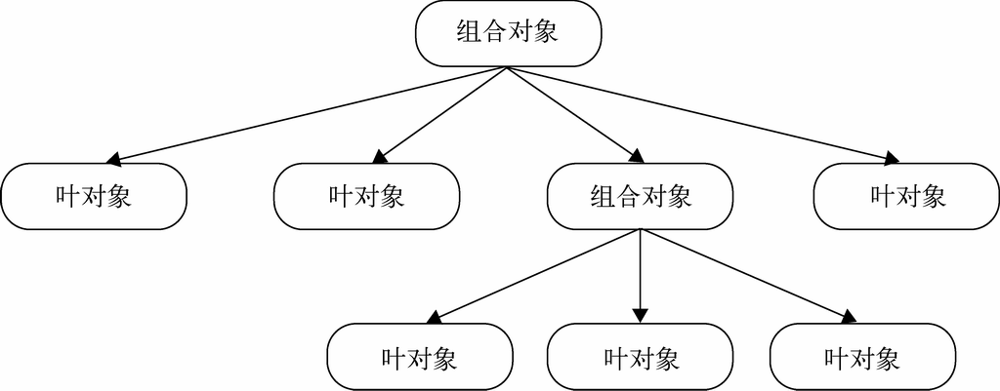

在组合模式中，请求在树中传递的过程总是遵循一种逻辑。
以宏命令为例，请求从树最顶端的对象往下传递，如果当前处理请求的对象是叶对象（普通子命令），叶对象自身会对请求作出相应的处理；如果当前处理请求的对象是组合对象（宏命令），组合对象则会遍历它属下的子节点，将请求继续传递给这些子节点。
总而言之，如果子节点是叶对象，叶对象自身会处理这个请求，而如果子节点还是组合对象，请求会继续往下传递。叶对象下面不会再有其他子节点，一个叶对象就是树的这条枝叶的尽头，组合对象下面可能还会有子节点，如图10-2所示。

图 10-2
请求从上到下沿着树进行传递，直到树的尽头。作为客户，只需要关心树最顶层的组合对象，客户只需要请求这个组合对象，请求便会沿着树往下传递，依次到达所有的叶对象。
在刚刚的例子中，由于宏命令和子命令组成的树太过简单，我们还不能清楚地看到组合模式带来的好处，如果只是简单地遍历一组子节点，迭代器便能解决所有的问题。接下来我们将创造一个更强大的宏命令，这个宏命令中又包含了另外一些宏命令和普通子命令，看起来是一棵相对较复杂的树。